Proprietary to General Electric
Direction 5321294, Rev# 3
GOC6 Service Methods
Proprietary to General Electric |
| Required Persons | Preliminary Reqs | Procedure | Finalization |
|---|---|---|---|
| 1 | Timing Not Applicable | 2 hours | Timing Not Applicable |
The following procedure describes and illustrates the system software loading process commonly referred to as the Load From Cold (LFC). It is important to follow the steps listed below in order.
| NOTE: | For those who are familiar with the LFC process, a quick-reference guide is also included. This Quick Guide contains a flow chart with the abbreviated software load process for those experienced with loading software on this series of consoles. Inexperienced persons should not use the LFC Quick Guide procedure because assumptions are made that the individual already knows how to perform key processes such as System State Save Restore, Options loading and System Configuration. See GOC6 LFC Quick Guide. |
| Last Revised: | 8 December 2008 |
| Item | Qty | Effectivity | Part# | Manufacturer | |
|---|---|---|---|---|---|
| Flat Blade Screw Driver | 1 | - | - | - | |
| Item | Qty | Effectivity | Part# | Manufacturer |
|---|---|---|---|---|
| DVD-RAM Optical Media | 1 | - | - | - |
| Item | Qty | Effectivity | Part# | Manufacturer | |
|---|---|---|---|---|---|
| None | 1 | - | - | - | |
| Condition | Reference | Eff |
|---|---|---|
All hardware components of the System must be functional. | - | - |
The Operator Console Front Cover will need to be removed to gain access to the Host Computer DVD Drive. | - | - |
A valid and current System Save State on DVD-RAM Media. System should already been configured for site specific configuration and preferences. If System State disk is missing or not current, some or all of the following must be performed: (1.) A manual configuration using information contained on the System Configuration Data Sheet completed at installation time. (2.) Software Options Licences will need to be manually reloaded. (3.) System Calibrations will need to be performed. | - | - |
Only trained service personnel should service the GE CT Scanner. | - | - |
VCTC Collector for GOC6 Console
CTT Operating System, Version 5.2.13
VCT Applications Software
GOC6 Class C Software DVD
GOC6 Class M Software DVD
Confirm that a current System State DVD-RAM Disk is on site. If unsure of status of the System State, execute System State Save Restore found in the Software Chapter of this manual.
As a backup to the System State Disk, confirm that a GOC6 Console Information Sheet is available and is completely filled out with site-specific configuration and preference settings.
Unplug the Hospital Network (HSP - J26) cable from rear Console bulkhead.
Label the cable as HSP - J26 (if necessary) and set it aside during LFC.
Remove the Operator Console front cover per the prescribed procedure Console Cover Removal and Installation.
Insert the OS DVD into the tray on the Host Computer DVD-ROM Drive ( Illustration 1).
Illustration 1: Host Computer DVD Drive Location
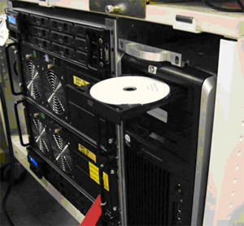
Shutdown and Power Cycle Operator Console:
Using the toolchest, open a Terminal Window.
Type: {ctuser@hostname}halt
Wait for System Halted message to appear on the monitors.
Illustration 2: Monitor Display – System Halted
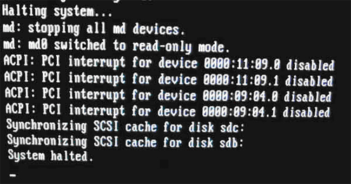
Cycle Operator Console power. Wait 30 seconds for the Operator console to settle down before re-powering the console.
As the Host Computer restarts, the boot process messages appear. After the booting process completes the boot: prompt appears.
At the “boot:” prompt, type the following:
Type: boot: GEHC2
| NOTE: | Special install script for multi-language keyboard support is no longer required for GOC6 consoles. System Configuration (reconfig) script and the new Linux OS supports multi-language keyboards. |
Illustration 3: Monitor Display – Boot Prompt

After the OS is loaded on the Host Computer, Complete Window appears.
Illustration 4: Monitor Display – OS Load Complete
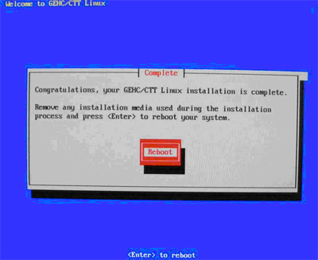
Remove the OS DVD from the Host Computer DVD-ROM drive when it ejects and close the tray. Press [Enter] to Reboot.
The Host Computer begins to reboot.
| NOTE: | Do not insert the Applications Software DVD into the Host Computer until the Host Computer has completed rebooting and a Terminal Window appears, displaying the prompt: [root@localhost ~]#. |
Illustration 5: Monitor Display – After OS Load Reboot
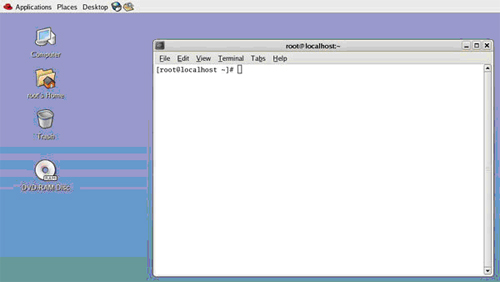
Open the tray on the Host Computer DVD-ROM Drive.
Insert the Applications DVD into the DVD-ROM Drive and close the tray.
| NOTE: | The Apps Software CD will open and run automatically. |
Select [Run Command] in the Warning box.
Illustration 6: Apps Run Command Window
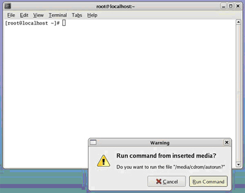
Select [Load] in the CT Software Installation window.
Illustration 7: Apps Load Command Window
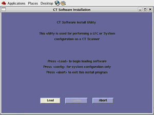
System State decision for the Install INFO decision box will appear.
Select [Yes] .
| NOTE: | If System State Disk is missing, a manual system configuration will be required at this time. Select [NO] and proceed to manually configure system. Reference GOC6 VCT System Configuration procedure. |
Illustration 8: Install INFO Window
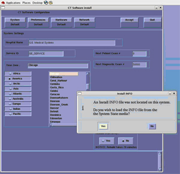
Insert the System State DVD-RAM into the Peripheral Tower.
Select [OK] .
Illustration 9: Install INFO - System State DVD Installed Window
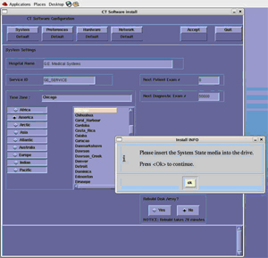
The Install INFO on the System State disk will be read and if a valid System State Disk has been inserted, an Accept window will appear.
Select [Accept] .
Illustration 10: Install INFO - Accept Window
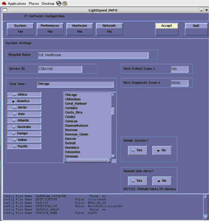
The Install INFO on the System State disk will be displayed and a confirmation window will appear.
Select [Yes] .
Illustration 11: Install INFO - Confirm Window
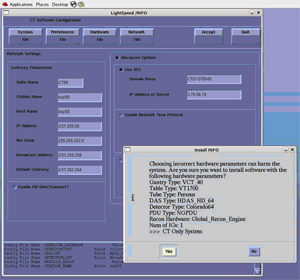
| NOTE: | Install INFO detail in Graphics will differ depending on System type. Verify that the Install INFO detail is correct before selecting [YES]. |
System Install INFO will be now used to create the CT Application load routine. A message will appear briefly stating: “Please make sure the CT application media is in the drive - the system will be rebooted”.
Do not remove the APPS disk at this time. The Operator Console will reboot automatically. A shell window will open and the CT Application software will be loaded.
When completed the Operator Console will display a window requesting that the console be rebooted. Select [YES] .
| NOTE: | Remove Apps disk before rebooting. |
Illustration 12: Apps Load Complete- Reboot Window
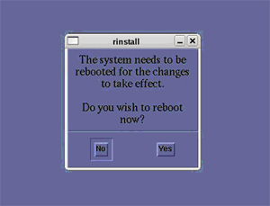
After the Operator Console has rebooted, a window will be displayed stating that the CT Application cannot autostart.
Select [OK] .
Illustration 13: Post Apps Load – CT Apps Autostart Window
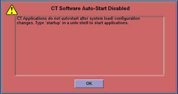
Open a Terminal Window, and log on at root:
Type: {ctuser@hostname} su – [ENTER] .
Type the root password and press [ENTER] .
In the Terminal Window Type: [root@hostname] load_darc_subsystem [ENTER] .
A Shell Window will open and the DIG software will be configured and loaded
Illustration 14: Terminal Window – DIG SW Load
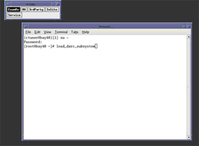
When finished the Shell window will display “DIG load has successfully completed”. Close Shell window.
Illustration 15: Shell Window – DIG SW Load
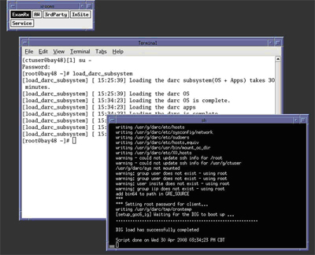
In the remaining open Terminal Window:
Type: [root@hostname] setdate [ENTER] .
Set the appropriate date and time values as needed. Follow instructions on screen for setting date and time.
| NOTE: | Service software (Class C) applies only to GE Healthcare personnel and customers with an Advance Service Limited License agreement. If loading Class M software see instructions included with the CD. |
| NOTE: | The Class C software version must match the Application software version loaded. |
Insert Class C Service Software CD into the Host Computer DVD drive.
In Terminal Window
Type: [root@hostname] install.classC [ENTER] .
Illustration 16: Terminal Window – Class C SW Load
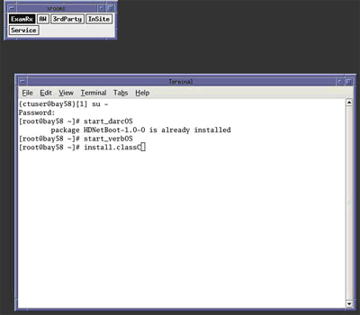
Close Shell Windows after Class C software has successfully loaded.
Illustration 17: Terminal Window – Class C SW Load Completed
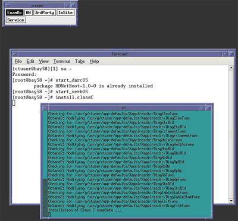
Remove Class C service software from the Host Computer DVD drive.
(For GE Healthcare personnel only) Install the Class M software per the instructions included with the CD.
Close the Shell Window once Service Software install is complete. Leave Terminal Window open.
In the Terminal Window, Type: [root@hostname] reboot [ENTER] .
Allow the System to come up fully into application Mode. If the CT Applications fail to start automatically, open a Terminal Window.
Type: {ctuser@hostname} st [ENTER] .
Insert the System State DVD-RAM Disk into the Peripheral Tower DVD-RAM drive.
Wait until the DVD-RAM drive is ready (i.e., front panel DVD drive LED is no longer lit).
Select: [Service] to access the Common Service Desktop (CSD).
Illustration 18: Desktop Service ICON
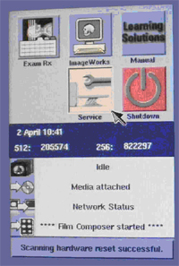
Select: [Utilities Tab] .
Illustration 19: Common Service Desktop – Utilities Tab

Select: [System State] . The System State Save/Restore screen appears.
Illustration 20: System State – Save/Restore Utility Window
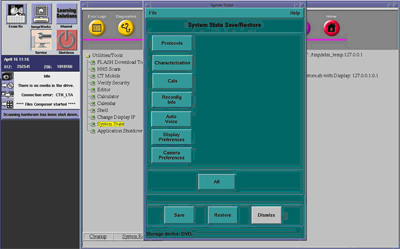
Select [All] .
Select [Restore] . The Restore System State box appears.
Select [Yes] .
Illustration 21: System State – Restore Confirmation Windows

Verify that the "Restore" of System State was successful. A message at the end of the System State Message Log Window should state: “Save/Restore System State: Completed Successfully.”
Illustration 22: System State – Restore Completed Successfully Window

When completed, select [Cancel] , then [Dismiss] .
Select Shutdown icon on the Desktop and restart the system.
NOTE: If performing a Load From Cold (LFC) for the first time and Software Option Licenses plus site-specific configuration has not been saved to System State, Software Options will need to be loaded manually.
See Install Software Options to load manually.
OR
Software Options licenses will be loaded during Restore System State. Proceed to next section.
On the Common Service Desktop – Utilities Tab, select [Flash Download] .
Illustration 23: Common Service Desktop – Utilities Tab, Flash Download
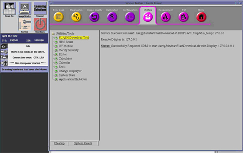
| NOTE: | The Flash Download takes 5 - 30 minutes, depending on which subsystems need firmware updating. |
When the Flash Download Window opens,
Select [Update] .
Illustration 24: Flash Download Window
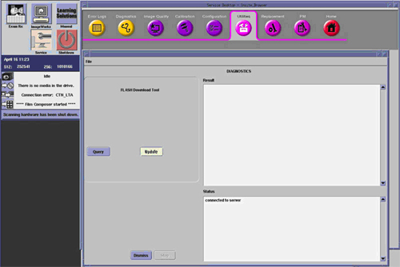
Once the Gantry Hardware Flash Downloads successfully, select [Dismiss] .
Close the Common Service Desktop.
Reconnect the Hospital Network cable at the rear of the Operator Console (J26) disconnected at the beginning of the LFC.
Select Shutdown icon on the Desktop and restart the system.
Insert the System State DVD-RAM Disk into the Peripheral Tower DVD-RAM drive.
Wait until the DVD-RAM drive is ready (i.e., front panel DVD drive LED is no longer lit).
Select the Service icon to access the Common Service Desktop (CSD).
Select: [Utilities] tab.
Select: [System State] . The System State Save/Restore screen appears.
Select [All] .
Select [Save] . The Save System State box appears.
Select [Yes] .
Verify that Save System State was successful. A message at the end of the System State Message Log Window should state: “Save/Restore System State: Completed Successfully.”
When complete, select [Cancel] , then [Dismiss] .
After completing Save System State, store the DVD-RAM Disk in a safe place.
After completing Save System State, store the DVD-RAM Disk in a safe place.
Go to the Functional Checks Chapter > System Scanning Test document to confirm proper operation.
Reinstall Console Front Cover.